Nunca senti tanto hype.
A torcida é toda que a sincronização aconteça, pq os 3 primeiros meses desse ano vão ser.. desertos.
VOLTAR
")
Nunca senti tanto hype.
A torcida é toda que a sincronização aconteça, pq os 3 primeiros meses desse ano vão ser.. desertos.
")
2024 começando com o real maior card de todos os tempos.
Antes que eu comece a ironizar tudo, o trunks é inexplicavelmente horrível na forma base, ele é todo travado por condições bestas que só atrapalham ele.
Agora, continuando, o trunks é o melhor card do jogo, pra começar ele tem 50% DE CHANCE DE DEFESA ATIVA, e essa defesa ativa ainda é condicional, só com 3 aliados android/cell saga no time, QUE INCRÍVEL
Ele ainda fica efetivo contra tudo contra um INIMIGO CHAMADO CELL, WOW QUANTOS BOSSES CELL NÓS TEMOS NÉ???? O TRUNKS DESTRÓI TODOS TODOS
Por sinal o buff ali dos aliados tmb dá pra ele um adicional de 70% e 100% de ATK e DEF, então ele é realmente travado a esse time e nada mais
E olha só! Acabou o kit dele, ele só tem isso
Parabéns trunks, sua forma base é muito absurda já pra competir com o resto do jogo, ainda mais que mesmo com a defesa ativa ele ainda não consegue tankar nada
Mas claro, o card não estaria completo sem uma condição horrível de transformação né?
Boa sorte tentando atacar 5 vezes pra finalmente poder se transformar, ou claro, estar contra um Cell no turno 5, que fácil..

E agora ele vira um card muito bom??????
O trunks real faz uma transição de água pro vinho, já que do nada ele se torna um card muito forte
Você poderia dizer que ele é um baita canhão de vidro muito diferenciado, já q se vc sair vivo da forma base, transformado ele fica insano
Pra começar ele tem defesa ativa garantida por 3 turnos, isso já é o suficiente já que quando ele se transformar a luta vai estar na última fase ou no final já, então é..
Ele tem 300% de ATK e DEF (balanceado) e MAIS 200% dependendo do quão alta tá sua vida, isso com mais 100% quando ele faz um super, oq é insano, o salto nos stats dele é absurdo
Por sinal ele tem um super adicional garantido e crítico garantido também, balanceado? Ainda não
Não acabou, o trunks, sendo exatamente esse card incrível que ele é, também tem a mecânica de usar uma active skill mais de uma vez, no caso, 1 vez na forma base e outra na transformação
Onde então na sua INCRÍVEL active de 10 SEGUNDOS ele se aproxima do inimigo, faz um T-Pose, diz 「地獄のような未来は もうたくさんだ!!」/ "Já chega de um futuro infernal!!", e estoura o inimigo, fim da active
Sim, eu podia colocar a active aqui 6 vezes pra pelo menos ter 1 minuto de video
Sim, a active é boa, na forma base ela quebra só 1 ataque do inimigo mas transformado ele impede o inimigo de atacar no turno, isso é muito forte, mas de novo, sobreviver os primeiros 5 turnos com esse cara é mais difícil do que parece..
No geral, o trunks é um card horrível onde vc tem q criar um time todo em volta dele pra ajudar ele a transformar e se vc for maluco de levar 2 numa luta, cê pode ter 2 turnos sem ataques oq é bem forte, mas de novo, condições né..
O trunks tem suas falhas, sim, mas que bom que ele veio com um personagem secundário que totalmente vai ajudar ele e não ser pior ainda... né?
")
Eu.. não achei que tinha como piorar.
Esse gohan tá num nível onde não dá pra fazer piada ou ironizar, ele simplesmente é horrível, não tem oq fazer
Ele é um suporte pra heavenly events e mastered evolution, categorias que precisam de uma ajuda, só que ele não ajuda em nada
O gohan é um card que tem a defesa tremendamente baixa pq os stats dele são muito baixos, independente da passiva, oq é engraçado, se ele tivesse stats mais decentes, ele até seria um card "usável", mas ele só não consegue
Em resumo, ele tem uns 240% de ATK e DEF q não ajudam em nada, builda 100% de DEF tomando golpes, oq é impossível já q ele morre pra qualquer coisa, e stacka 50 de ATK no super, que também não adianta pq ele não dá dano 💀
Oq ele tem de diferencial é q ele cura bastante vida, mas de que adianta se ele morre pra tudo e levar ele no time já tá zuando seu HP?
Acho q eu nem preciso explicar mais nada, esse card é horrível, mas tão horrível que não merece nem piada.

O primeiro piccolo ruim em anos.
Bom, esse piccolo é um suporte que dá dano, é o típico orb changer mas que precisa dos próprios orbs então ele n tá ajudando o time em nada
Literal metade do kit dele vem quando ele pega 4 orbs ou mais, aumentando o suporte dele de 20% pra 50%, dando mais ki, e ganhando 60% de chance de critar, a defesa? Quem precisa disso?
É, ele não tanka absolutamente nada, triste o rapaz.

Já pode demorar até o turno 7?
Bom, esse eza tinha algum potencial, já que ele é o último desse trio q foi o freeza, ele e o goku q tem várias transformações, mas é difícil levar ele a sério infelizmente
Tipo, o vegeta tinha um kit base interessante, stack de DEF, leader skill pra pure saiyans, um pouquinho de nuke ali.. era alguma coisa já
Mas o eza não salvou muito.
Infelizmente o vegeta é o card n.28742969 que stacka DEF e não tem nenhuma mecânica defensiva pra ajudar, ou seja, defesa bruta contra bosses que te destroem no turno 1, bem útil
Bom, o eza decidiu que seria muito engraçado dar pra ele 70% de chance de mudar orbs, pq é logicamente divertido fazer isso né (o orb change ainda é horrível), não bastando só isso ele ainda lança um super adicional com 7 orbs, sabe quem lançou em 2023 e com um orb change e mecânica de pegar orbs melhor? Não preciso nem mencionar o goat né..
Enfim, o stack do vegeta aumentou de 30% pra 50%, mas é lógico que não ia ser o bastante né, ele é horrível na forma base.. e infelizmente, não muda muito nas transformações automáticas dele..

Bom, nessa transição de transformações o vegeta segue praticamente o mesmo com só leves aumentos nos buffs q ele ganha, mas dá pra só ignorar o super vegeta
No ssj2 o orb change dele finalmente se torna garantido e o super adicional agr é com 6 orbs.. parabéns pra transformação q vc pega no melhor cenário possível no turno 5..
No ssj god ele pelo menos fica bom, o nuking dele já tá em 25% de ATK por orb e o super adicional diminuiu de novo pra 5 orbs agora, tá melhorzinho
No geral as transformações até ajudam mas não tanto, ele continua tendo defesa bruta, só tá facilitando ele stackar essa defesa q nem vai ser muito útil..
Pelo menos depois de tudo isso né..

Pronto, agora ele é usável.
Depois de passar por 20 transformações, o vegeta realmente vira um card bom, já que no turno 1 ele muda todos TODOS os orbs pra phy, assim automaticamente dando pra ele a melhor nuke possivel, além de ainda assim manter o orb change depois
Agr uma coisa que me deixa irritado é o fato do super adicional dele continuar sendo com 5 orbs, ok, nada de errado, mas agr ele dá crítico garantido caso vc pegue 23 orbs, vc literalmente dá crítico garantido no turno da nuke e real nunca mais, como assim???
Tirando isso, obviamente vc stackou antes de chegar aq e com 2 supers o vegeta tem uma defesa boa, mas olha só que grande novidade, demora demais pra chegar no blue e ele é praticamente só bom em 1 turno, depois acaba
No geral um eza que tinha potencial e que mataram completamente, triste q dos 3 cards nesse estilo, nenhum é usável direito..

É melhor você estar contra um cell parte 2 a vingança dos derrotados (sim estou falando do trunks teq)
Pode até parecer engraçado, mas esse vegeta até q é um card decente contra um inimigo androids, e contra um cell ele é realmente forte, mas ele é travado nisso, tem crítico garantido e adicional garantido blá blá blá.. sem um inimigo específico ele não faz nada, eles precisam parar de restringir cards desse jeito..

Quer saber? Retiro oq eu disse sobre a Kale, ESSE sim é o card com uma leader skill pra ninguém.
O Omega é o LR carnival mais insano de todos, tendo sua FANTÁSTICA leader skill pra GT BOSSES, MEU DEUS QUE CATEGORIA INCRÍVEL
Bom, se vc excluir o time inteiro do omega, ele é um card muito bom, os debuffs dele são muito bons, o dano dele leva um tempo pra buildar mas é bom, ele é orb changer, e um tank brabo
O grande problema é que pro omega ser bom defensivamente, ele precisa de um time inteiro GT bosses e isso é praticamente suicídio, o time tem 2 cards bons incluindo ele mesmo
Tipo, em geral o omega tem um design focado no slot 1, e ser um tank, tipo, eles querem muito que ele ajude o time, ele literalmente tem muita defesa e redução de dano, uma active forte que dá um dano legal, até um revive o cara tem
Por sinal.. que revive incrível ein.. ele te encara e conversa por 5 horas
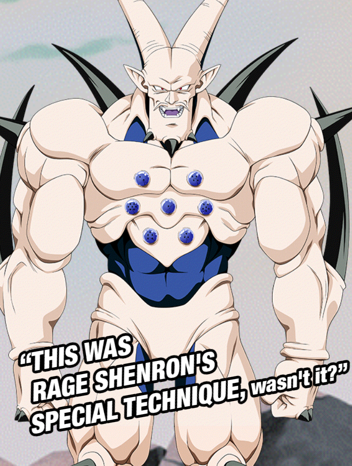
(é difícil tankar essa imagem slk)
Voltando, o Omega pelo jeito foi feito pra ser "O herói de GT bosses" mas pô.. ele sozinho não consegue carregar o time, eles se esforçaram pra ele ser bom mas ele é apenas mais um card extreme sem time..
Por sinal as OSTs desse cara são muito boas, sinistro
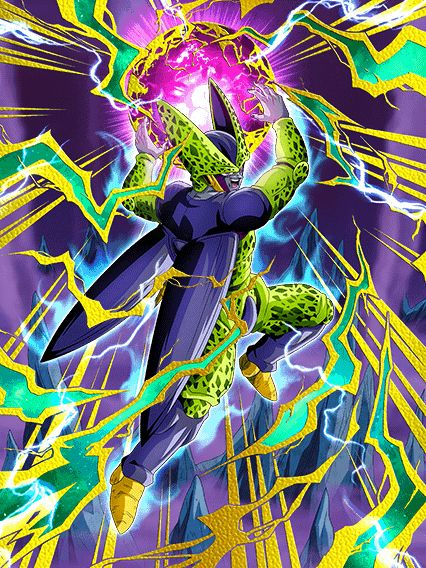 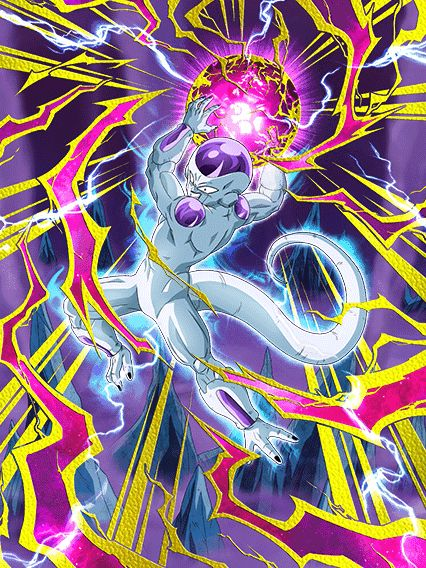
Literalmente"inguais".
Eu gosto desses caras pq eles tem o exato mesmo kit, mesmos buffs, adicional garantido se todos aliados forem revenge, gt bosses ou sworn enemies e mais ATK e ficam efetivos se o inimigo estiver com uma condição
E essa é a real única diferença q eles tem, o Cell ganha esse buff se o inimigo estiver stunado e o Freeza se o inimigo estiver selado
Obviamente querem que a pessoa use eles como uma rotação sempre mas pô, eles tem o mesmo kit e já deu pra ver q nenhum é slot 1 né..
")
Útil por 3 turnos.
Esse gokuzinho é levemente interessante já q ele tem defesa ativa por 3 turnos, é o melhor q ele tem já q a defesa dele depois q isso acabar é muito podre
Ele tem bastante crítico e tals mas.. o cara ganha buffs enfrentando um inimigo gt bosses, se os cards jogáveis já são poucos, imagina os bosses..
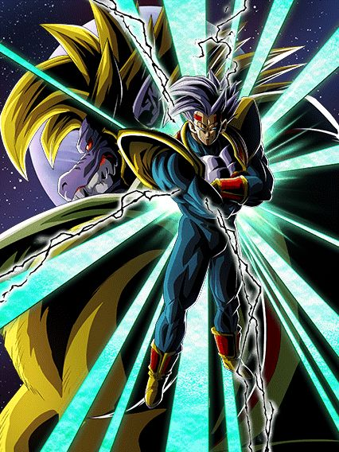
O destruidor de pure saiyans.
Pessoalmente eu amo muito esse card, ele é genial cara
Tipo SIM, o baby só tem metade do kit se tiver um inimigo pure saiyans mas MLK, que kit
O cara tem 80% de chance de critar, um monte de ATK e DEF, links fortes de vilão (agora ele tem o baby teq do tanabata pra ajudar ele), e ainda tem habilidades defensivas a mais
Se ele cair abaixo de 40% de HP, ele ganha 150% a mais de DEF e 50% de chance de desviar, mas tem um extra..
Essa também é a condição pra ele se transformar, ou seja, depois q vc sair da transformação q vai impedir o boss de dar supers, AOEs e etc, vc ainda faz questão de tankar tranquilamente tudo
E já q falei da transformação..
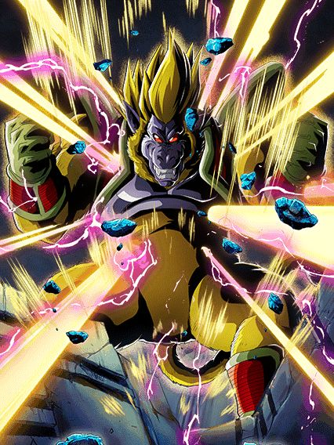
Muito bom.
Fácil de pegar Ki, tem 50% de chance de critar e bom dano, pode durar bastante turnos, bem maneiro em geral, literalmente um pequeno extra pra ajudar o baby em eventos difíceis

Eu juro que Macau tem alguma relação secreta com GT bosses.
É serio, é muito bizarro, tipo, ano passado fez sentido o super 17, ele era a última coisa antes do aniversário, mas o omega?? Depois dele tem os androids 💀
Jamais vou recusar as 7 ds, mas que é estranho, é.
Medo doq Macau irá fazer quando lançar um baby dokkan fest (assustador)
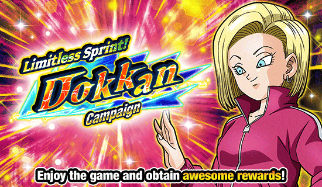
Continuo sentindo todo o hype de 2024, está insano 🔥
Pelo menos, está tudo bem, pq a junção do global e jp foi confirmada pra perto da celebração de downloads, então a gente só tem que enfrentar mais 4 meses de coisas inúteis!!! Wow!!!!1!1!1!11!1

G O K U B A S E .
Esse card é bizarro, ele tem de tudo pra ser bom mas ao mesmo tempo é todo ferrado
Pra começar, eles obrigatoriamente precisam de um goku no turno pra terem os buffs mais importantes, só que eles são androids né, eles vão ter links de androids, o goku NÃO pô
E infelizmente pra eles, eles ganham muito mais DEF e 35% de redução de dano só depois de darem super, e lembrando que esse card saiu logo depois da celebração de download no jp, então eles já tavam ligados no quão tóxicos são AOEs no começo da partida e deixaram esse card assim mesmo, muito frágil
O real grande diferencial é esse card ser lider e suporte pra nova categoria "Tournament Participants", que é não ironicamente muito forte com cards muito bons
E o suporte deles é muito bom sim, eles dão 35% de ATK e DEF pra categoria no turno, esses 35% ainda aumentam pra 52% de ATK e 53% de DEF se eles pegarem 7 orbs oq eu achei meio difícil as vezes mas ok né
E eles tem um efeito de super attack muito forte, onde cada super attack deles aumenta 35% de ATK e DEF de todo mundo por 2 turnos, então sim, eles tem o incrível suporte de múltiplos turnos, muito bom isso, e slk, com 2 supers eles dão 70% de suporte, isso é muito forte
Uma pena que esse super attack tão forte só pode ser usado SE TIVER UM GOKU BASE NO TURNO (Omatsu por favor pare de colocar o goku em todos os cards, não precisava disso)
E pra finalizar esse card confuso, eles tem a active skill mais ridícula em anos
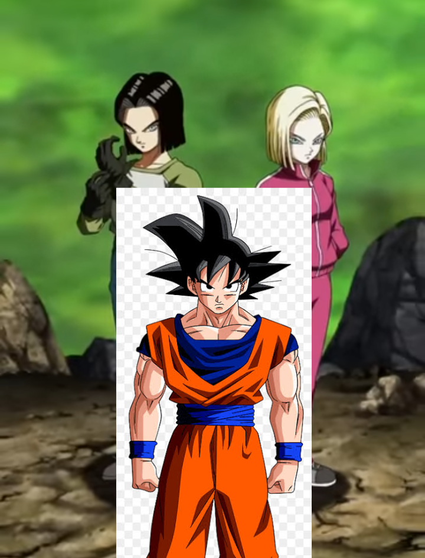
Se liga nessa condição: "Pode ser ativada após o turno 5 caso esteja com menos de 78% de HP"
Você olha isso e pensa "slk complicado ein, deve ser um ataque forte"
Eles mudam orbs TEQ pra INT.
É só isso, eles só mudam orbs e acabou, não tem buffs a mais, crítico, adicional, sei lá
Nada.
Tirando a ost muito boa, essa é certamente uma das active skills que foi feita em 2023/2024.
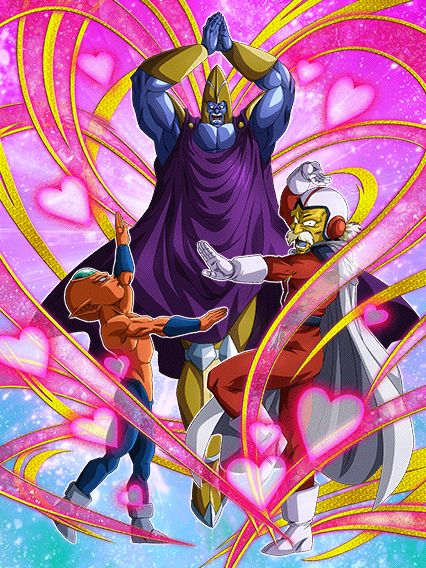
Eu não sei se agradeço por não ter uma categoria universo 3 no jogo ou se questiono pq esses caras são líder pra power of wishes.
Enfim, eles precisam ou de um time power of wishes ou tournament participants pra terem uma passiva, já começa por aí né 🔥
Ai pra se contradizer eles só ganham 100% de ATK e DEF se tiver um aliado power of wishes, então é, você parece ter liberdade mas não tem não xd
Tipo sim, eles quebram 1 ataque do inimigo e são efetivos contra tudo se tiver um aliado tournament participants, mas vc realmente tem como comparar isso com um pedaço de passiva?
Em resumo, mais um card secundário horrível e inútil, obrigado dokkan
Sério, se o objetivo é encher o jogador de goku base, não é mais fácil fazer o card secundário desse banner um goku base?
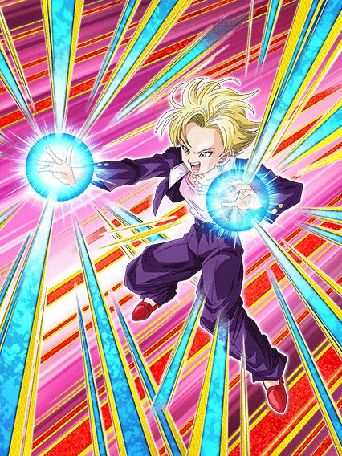
Pq específicamente o super dessa 18 é tão bem feito?
Bom, essa 18 quer muito ficar no slot 1, já que a passiva inteira dela pede isso
No slot 1 ela tem 200% de DEF a mais e 36% de redução de dano, além de dar 30% de DEF pra todo mundo no turno, não ironicamente isso é decente
Esses buffs são cortados no meio depois do turno 5 mas olha, considerando o tamanho de eventos difíceis recentemente..
Pra completar ela ganha 150% de ATK e 30% de chance de critar se ela levar um golpe antes de atacar, então é, slot 1.
Bom, é, ela é um card F2P slot 1, oq poderia dar errado?
Mas não diria que ela é inútil não, principalmente por ela ser uma rara 18 que não precisa de um 17 pra ter 90% da passiva, dá pra levar ela em algum evento sim
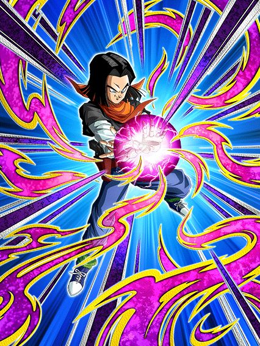
Ele certamente é metade de alguém que não poderia ser derrotado se ele fosse o super 17...
Esse cara é decente por 3 turnos e depois ele é um card, já que nesses 3 turnos ele tem 67% de chance de desvio (só arredonda pra 70% pô)
Depois dos 3 turnos a chance cai pra 50% oq não é exatamente horrível mas olha só, se 70% já é perigoso hoje em dia, imagine menos.. pelo menos ele tem 100% de DEF a mais se estiver no slot 2 ou 3 então é.. bem recomendado
Bom ele builda um pouco de ATK e DEF desviando e no turno 4 adiante ele tem mais 100% de ATK e um incrível adicional de 30% de chance de ser super, caraca, que personagem fantástico
Como eu disse, 3 turnos e depois inútil
Eu ainda tô achando hilário que o awaken e eza desse cara e da 18 vieram na mesma celebração e de algum jeito ela ganhou uma animação linda no super e esse cara tem uma animação de 2016 💀
")
Dokkan criou um vício em fazer o Kuririn do clássico muito forte.
Os buffs pra DB Saga não param, e eu simplesmente amo o fato do time ser muito F2P, coisa boa
Esse cara não tem nem EZA ainda mas ele é absurdo de forte, o cara tem muito ATK e DEF, debuffa o inimigo, é suporte de 30% de ATK e DEF pra DB Saga, tem uma chance infelizmente baixa de lançar um super adicional mas tá ali né
E acho q o mais doido é q ele ganha um scouter e 30% de chance de desviar por 3 turnos se seu HP cair abaixo de 86%, isso é muito forte considerando q DB saga tem deuses tipo a Bulma ou o Hacchan, esse cara é mais um personagem decente pra levar em eventos e ele consegue se segurar sozinho sim.
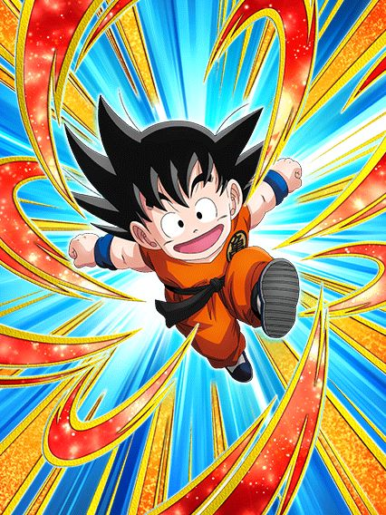
Esse cara vai eventualmente ser um LR, mas como o awaken dele pra LR pode acontecer aleatoriamente no mês que vem ou em 2036, é legal falar dele agora.
Ele tem uma base muito boa pra um LR, já que ele é restrito a DB Saga e Earth-Bred Fighters, q advinha só, é o time dele 🤯
Tem crítico, super adicional, todos com chances baixas mas q vão aumentar quando ele ganhar awaken
Tmb tem um pouquinho de suporte, e tmb stacka ATK no super, então é, a base ele tem, que ele seja incrível.


18 defensiva e 17 ofensivo, caramba, nunca vi isso antes ein dokkan.
Bom, os dois tem kits parecidos pq eles são irmãos né, uau
O 17 é um nuker ofensivo, ganhando 40% de ATK por orb e 30% de DEF e dá um adicional de 70% de ser super se o inimigo estiver stunado
Se tiver uma 18 na rotação ele dá suporte de 30% de ATK pra Sibling Bond e fica efetivo contra tudo, ou seja, pq vc não usaria eles juntos né
Enquanto isso a 18 é nuker tmb mas ganha mais DEF q ATK por orb, dá o mesmo suporte de 30% mas pra DEF, e diferente do 17 ela tem defesa ativa, q é bem mais valioso, aí ela já é usável com uma buildzinha de desvio
Ela fica efetiva contra tudo se o inimigo estiver selado mas isso realmente não interessa
O maior problema desses 2 é q eles não tem nenhum buff de começo de turno, é só oq eles pegarem de orb e acabou, isso é perigoso demais pra levar eles em eventos já q nenhum é orb changer, mas no geral, se eles ganharem um eza, podem ficar muito bons sim
E a arte deles é muito linda, slk, precisam de um sticker logo

Certamente o inimigo que o irmão do raditz e o rival do irmão do raditz tiveram que enfrentar.
Ah não sei pq tanto reclamam desse card, ele é tão bom, chance de stunar todo mundo no começo do turno, efetivo contra 1 inimigo, redução de dano se estiver enfrentando 2 ou mais inimigos..
Tipo, ele até ganha bastante buffs e dá crítico garantido se estiver contra um inimigo Universe Survival Saga ou Tournament Participants, pra mim isso é muito bom! Eu realmente gosto desse card F2P!
Ah é, ele não é um F2P..
Esse é sem dúvidas o pior eza de 2023/2024, tipo, até o goku black int tem uso se o evento for longo o bastante pra ele stackar, esse cara é tão horrível q ele garantido vai fazer as partidas acabarem bem rápido, já q ele vai morrer pra você
Acho q a gente deu sorte q ele não é extreme ein, se não seria pior
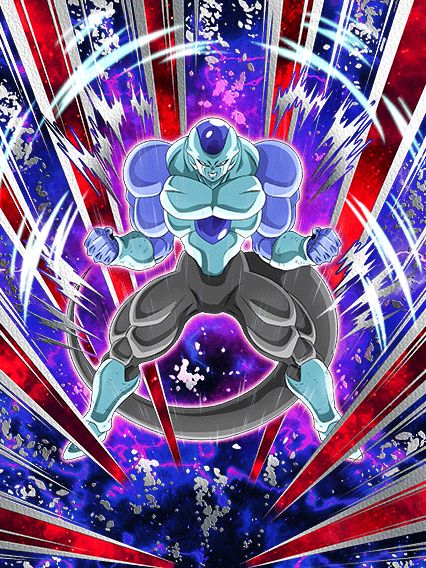
MEU DEUS.
PERA AI PERA AI.. CALMA..
SÃO BUFFS... PRA KALE??????????
OOOOOOOOMAGAAAAAWWWD
Esse frost é super simples de passiva e não tem nada de super útil, mas os stats dele são bem altos então ele acaba dando muito dano de uma vez, é meio engraçado
Não, ele não revive o time Universe 6 mas hey é um começo de algo

Um tank genuinamente bom.
É isso, eles são um tank pra Universe 6, eles realmente ajudam a Kale de forma honesta (perdão, é realmente surpreendente tá?)
Eles tem defesa ativa, buildam defesa ganham um buffzinho tomando golpes, eles realmente são um tank
Lógico q eles só fazem isso mesmo, mas isso q eles fazem já é o bastante, obrigado omatsu.
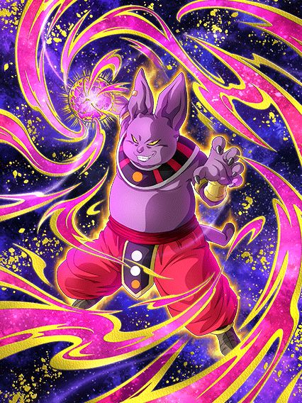
Isso aqui é uma aberração.
Esse cara tem uma defesa ok, suportezinho legal pra Universe 6, aí do nada..
50% de chance de 400% de ATK
????????
O cara tem uma chance de ativar um pedaço da passiva??
Mas quem disse que para por aí? Depois eles ainda metem um 30% DE CHANCE DE 600% DE ATK RAAAAAAAAHHHHHH QUE PASSIVA É ESSA
Por sinal, o linkset desse personagem é abismal de HORRÍVEL, O CARA TEM OVER 9000 QM RAIOS TEM ESSE LINK-
Sem comentários.
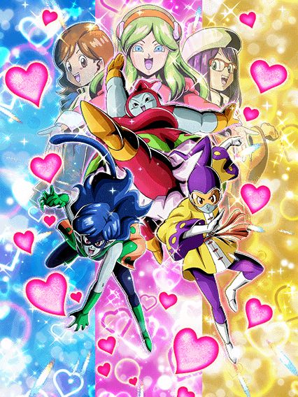
Kkkkkkk hey guys se lembram quando o 17 e a 18 enfrentaram a R- a pera, UM LR DE PARTE 2 Q FAZ SENTIDO???
Parabéns a akatsuki e todos envolvidos, temos um LR da Ribrianne mas não do Kid Buu, obrigado 🔥🔥
Bom, ribrianne, muito hype realmente para o global
Pra começar elas tem muitas chances diferentes de mudar orbs oq é bem bizarro e eu garanto q deve ter um sortudo q viu todas as chances não ativarem xd
Elas tem 2 adicionais que podem ser supers, e ainda ganham bastante buffs com pelo menos 2 orbs pegos oq é muito bom, é coisa fácil né
Elas tmb ganham 22% de chance de crítico a cada 2 orbs pegos, oq é bem forte já q elas tem adicionais, redução de dano, crítico e orb change
Oq nos leva a situação óbvia delas: sem time
Independente doq vc pense, a categoria Universe Survival saga tem 2 times, Universe 7 e Universe 6 entre muitas aspas, qualquer outro é correr risco de vida
Tournament Participants? Vc tem o goku descalço, majunior e etc, pq vc usaria a Ribrianne? Não tem pq
Lógico, a Ribrianne não é uma top tier secreta que não tem time, ela é um LR muito decente mas que é facilmente substituível por algo melhor, e é isso
Por sinal, ela tem uma forma gigante com uma condição de power of wishes, outra categoria q vc jamais levaria a Ribrianne já q se os links dela com outros personagens do torneio do poder são ruins, imagina com cards tipo os GT Boys..
")
Isso aqui é a prova de que teria um goku black LR na celebração de downloads e tiraram ele de última hora.
Ela em si é uma boa giant form, 50% de chance de critar, dano legal, orb changer, fácil de pegar ki, bem tranquila
Mas a OST sinistra desse card é bizarra pq combina perfeitamente com a Ribrianne e ao mesmo tempo não, juro que seria perfeita num goku black rosé carnival com um domínio.. que bom que esse card totalmente existe e jamais foi ignorado pra colocarem o gohan do futuro ou algo assim..
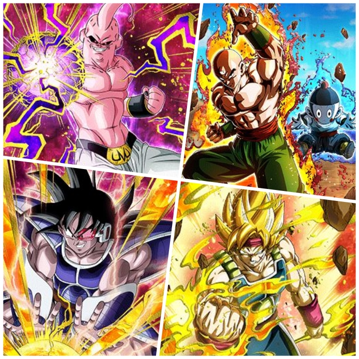
Mais world tournament? Wooowww que divertido (não aguento mais isso não, socorro)
Tá.. vamo lá, o bardock é bem decente contra um inimigo Wicked Bloodline, tem 50% de chance de desvio, 2 adicionais e no geral buffs bem decentes, ele é usável no mínimo
O turles é um card de super battle road, e é isso, não consigo ver ele sendo usado pra qualquer outra coisa, ele tem uma build ali atacando mas vai demorar demais em eventos, melhor ficar no mais fácil mesmo
O buu já não tem esse problema de só ser bom em um evento, ele é horrível em qualquer um
O cara muda orbs pra rainbow depois de receber 5 ataques, que desgraça de passiva é essa??
O tenshinhan e chaos são super simples e infelizmente não tem nada de especial, eles só tem dano e defesa bons e uma chancezinha de crítico e adicional, não são incríveis em nada específico mas não são inúteis não, dá pra levar em uns evento ein.
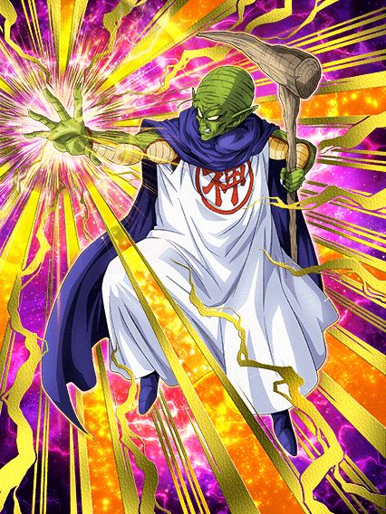
Certamente um dos mestres do irmão do raditz.
Eu realmente não sei dizer se esse card foi feito seriamente, mas eu acho que não foi não
O mano tem stats horríveis, passiva horrível, o suporte pra earth bred-fighters é até decente mas é literalmente ignorado pq todo o resto do card é inútil
Lógicamente ele é mais um card meme, mas sério, parem com os cards meme constantes, é quase 1 a cada celebração, qual é, fica difícil zuar..
Você chegou ao fim dessa página!
Ou talvez.. eu não tenha terminado ainda? Sei lá
Obrigado por ler tudo, e fica a vontade pra ver outras